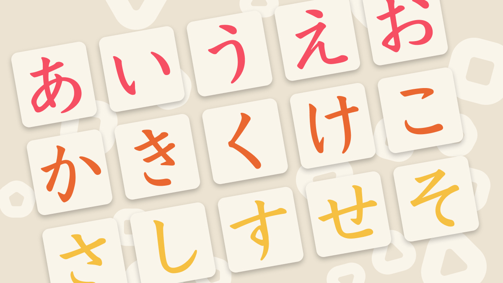

Kana are the phonetic characters used in the Japanese writing system. They represent the sounds of the Japanese language and are essential for reading and writing in Japanese. Each kana character corresponds to a specific syllable sound, making it easier to pronounce words.
What we learn here is Hiragana, primarily used for native Japanese words, grammatical particles, and verb endings. The appearance of it are curvy and flowing characters. The kana is essential for reading Japanese texts, as kana are used alongside kanji (Chinese characters) to form complete sentences.